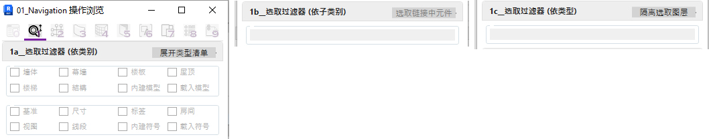
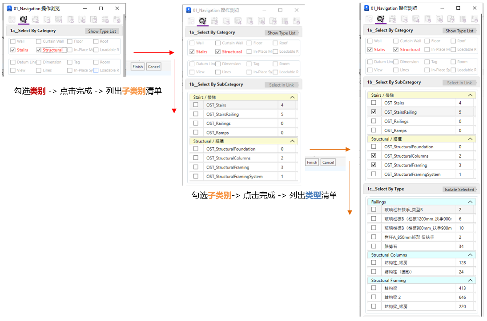
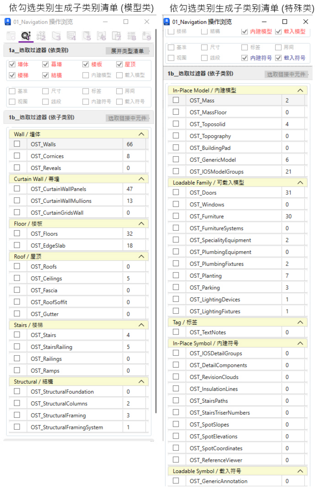

01页签目前已制作三个主要工具, 近似起始面板的预筛选功能,
但可同时选取多个不同的类别或类型, 层级由高至低为:
a. Select By Category 选取过滤器 (依类别)
b. Select By SubCategory 选取过滤器 (依子类别)
c. Select By Type 选取过滤器 (依类型)
解决Revit自带筛选功能效能低下的问题，
可以文字清单的形式预先过滤要作筛选的物件
亦可依当前视图可见物件列出详细的子类别和类型清单:

目前可列出的类型筛选清单如下: (模型类和特殊类已完成, 注释类待完成)
